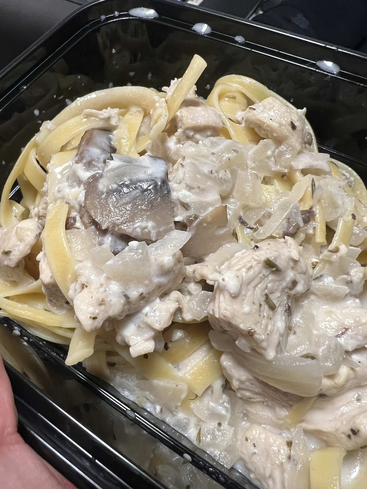
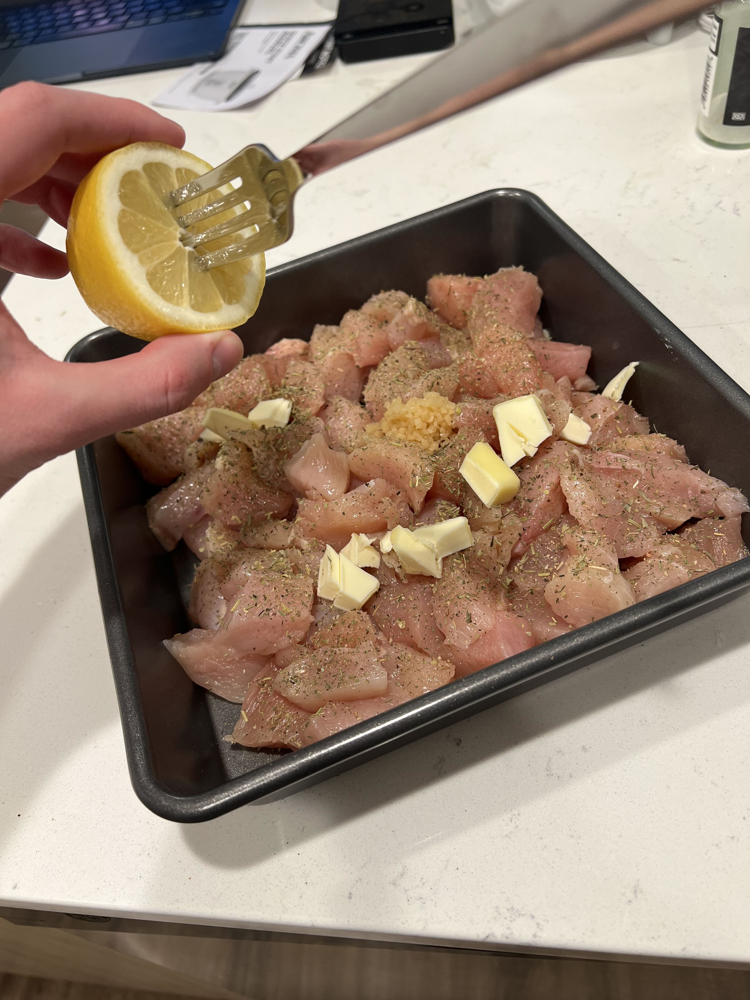

A creamy high-protein chicken alfredo pasta dish with a rich and home-made flavorful sauce. Perfect for a comforting meal-prepped dinner!
Ingredients
For 6 servings:
- 1kg (2.2 lbs) Chicken breast or tenders
- 1/2 medium Onion
- 150g Mushrooms (optional)
- Italian seasoning
- Minced garlic
- Lemon juice
- 50g Parmesan cheese
- 300g Cottage cheese
- 200g Greek yogurt
- 150ml Chicken broth
- Pasta (fettuccine recommended)
Steps
Preparation
- Meat: Chop the chicken into 1/2 to 1 inch pieces. Season with salt, pepper, garlic powder, a teaspon of minced garlic, and Italian seasoning. Add some lemon juice (half a lemon); pro tip, you can stick a fork in it and squeeze to get more out. Add some butter if desired.
- Vegetables: Dice a whole onion and 150g+ of Mushroom (the more the merrier).
- Sauce: Blend/mix 200g Greek yogurt, 300g Cottage cheese, and at least 50g Parmesan cheese

Cooking
⚠️ Do NOT let the sauce simmer- Cook the pasta according to the package instructions. Drain and set aside.
- Bake the chicken in the oven for 20 minutes at 420℉. Occasionally open and mix chicken to ensure evenly cooked. (Chose to bake chicken since it’s less scary and my stovetop is not that big…)
- Cook vegetables on low heat on pan in the meantime with some oil.
- Once the Chicken is baked, add it with the vegetables (Note to self, probably drain water after baking otherwise its too liquidy)
- Add 150ml of Chicken broth (0.6 cups)
- Add the sauce; do not let it simmer. It will curdle and ruin the sauce. Just mix it in and let it warm up a bit.
- Add the pasta and mix well. Optionally add some more cheese on top.
Viola, you have a delicious chicken alfredo pasta dish! Serve with some parsely on top for some color.
Notes to Self
- Need to buy a proper blender; the dingy thing I had was not strong enough.
- Sauce was too liquidy, will try to drain the chicken after baking.
Sources
Inspired from from Noel Deyzel’s video.